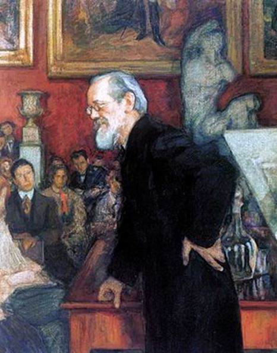
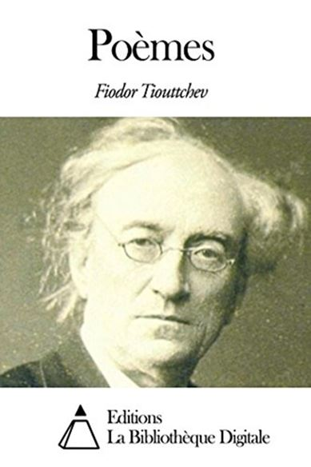
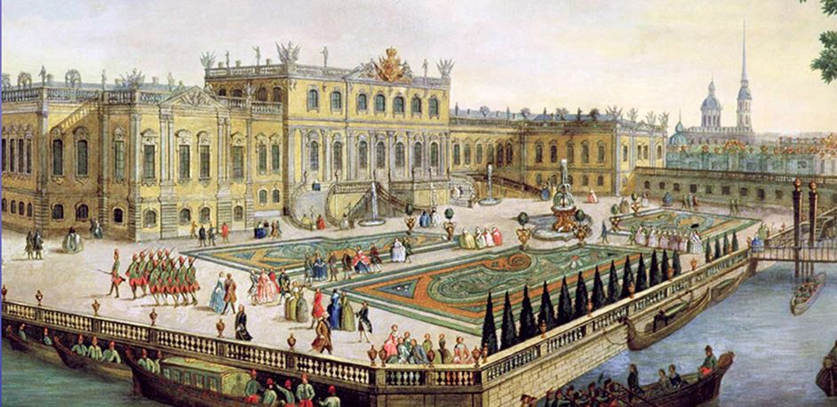

F. TIOUTTCHEV, Умом Россию не понять (On ne comprend pas la Russie avec la raison).
Encore aujourd’hui, malgré des efforts de nombreux passeurs de la Russie en France, ce pays reste toujours aussi mystérieux qu’à l’époque de Madame de Staël. Pourquoi l’ignorance française de l’âme russe persiste d’une époque à l’autre ? La réponse, nous allons la chercher dans l’histoire de la philosophie russe.
La philosophie russe naît, en 1830, comme antithèse à la philosophie occidentale.
Faut-il ajouter que la pensée russe a toujours été, pour les mêmes raisons, religieuse et slavophile. Niant la France des Lumières en lui préférant les Allemands comme Spinoza, Kant, Fichte et Hegel, les premiers penseurs russes - Vladimir Odoevski, Dmitri Vénévitinov, Ivan Kireïevski, Alexandre Kochelev, Stepan Chevyriov - font naître une opinion que la Russie est inaccessible à la raison européenne, que l’Europe est incapable de comprendre la Russie. Kireïevski, par exemple, dans sa Критика и эстетика1 (Critique et Esthétique) compare la raison avec la guillotine2. Selon le penseur, l’intelligence française des Lumières ayant engendré la Révolution a engendré la guillotine.
Mais il est à noter que le refus de la raison en Russie est un phénomène beaucoup plus ancien que l’époque des Lumières. Cette tradition prend ses sources dans la Russie médiévale. Vassili Klioutchevski, traitant lui aussi ce sujet, parle de la honte, à cette époque-là, de s’intéresser aux sciences par peur de déplaire à Dieu. Il s’agit ainsi du « péché de l’âme3 ». De ce point de vue, il est évident que l’Occident n’est pas capable de comprendre la Russie parce que les Russes eux-mêmes ne comprennent pas leur pays. « On ne comprend pas la Russie avec la raison4 », – commence Fiodor Tiouttchev son fameux poème.
Ces mots sont devenus la devise des Russes qui se sont résignés devant cette impossibilité de penser leur pays, de le comprendre, de l’expliquer, considérant ce phénomène comme une particularité de la mentalité nationale et en étant très fiers. On peut trouver l’explication de cette non-compréhension dans une autre phrase de Tiouttchev, celle qui termine son poème На возвратном пути : « Здесь человек лишь снится сам себе5 ». Le poète montre ainsi que la vie en Russie n’est rien d’autre que le sommeil. L’homme ne voit lui-même et sa vie que dans ses rêves.
La façon dont Tiouttchev voit la vie en Russie met l’existence de l’homme russe en dehors de l’histoire car ce dernier, selon le poète, ne se conçoit que dans son rêve. La vie qui est en dehors de la réalité, en dehors de l’histoire ne peut ainsi ni être comprise, ni être analysée, ni être expliquée. À ce propos, il est curieux de mentionner ici l’opinion du philosophe allemand Oswald Spengler.
En critiquant la tentative de Pierre le Grand de « raisonner » la Russie, d’y imposer une vie historique artificielle6, le philosophe précise que la destinée du peuple russe est de vivre en dehors de l’histoire7. Ainsi, vu le terrain, les raisonnements historiques et scientifiques ne peuvent pas être appliqués pour la compréhension de la Russie. Les Russes, sans parler des Européens, ne peuvent ressentir cette dernière qu’intuitivement. Qu’est-ce qui reste à faire, dans ce cas, au peuple qui aime son pays ainsi qu’à ses amis russophiles ? Il ne leur reste qu’à croire à la Russie : « on ne peut que croire à la Russie8 », – écrira Tiouttchev. Ou encore, comme dira le philosophe Ivan Iline : « Croire à la Russie comme tous les grands Russes, comme tous ses génies et ses bâtisseurs y ont cru9 ».
A.G.
1. Ivan Kireevskij, Kritika i estetika [Critique et Esthétique], M., Iskusstvo, 1979.
2. Ibid., p. 251.
3. Vassilij Klučevskij, Sočinenija v 9 tomax [Œuvres en 9 volumes], M., Mysl’, 1988, t. 3 : Kurs russkoj istorii, p. 278.
4. Extrait d’un poème de Fiodor Tiuttchev traduit par Eugène-Melchior de Vogüé, « La poésie idéaliste en Russie, F.-J. Tutchef », Regards historiques et littéraires, Armand Colin, Paris, 1905, p. 300.
5. « Ici, en Russie, l’individu ne vie sa vie que dans son sommeil. », Fëdor Tjutčev, « Na vozvratnom puty » [Sur la route de retour] [1859], Naše Vremja, 17 janvier, 1860, p. 12.
6. Il s’agit de l’européanisation de la Russie.
7. Osval’d Špengler, Zakat Evropy [Le Declin de l’Occident] [1918-1922], trad. de l’allemand par I. Maxan’kov, M., Mysl’, 1998, t. 2, p. 198.
8. Extrait d’un poème de Fiodor Tiouttchev traduit par Eugène-Melchior de Vogüé « La poésie idéaliste en Russie, F.-J. Tutchef », art. cit., p. 300.
9. Ivan Il’in, O russkom nacionalizme: čto sulit miru rasčlenenie Rossii [Sur le nationalisme russe : conséquences modiales de la division de la Russie], préf. A. Ljul’ko, D. Suškova, Novosibirsk, Russkij Arxiv, 1991, p. 11.
Partager cette page